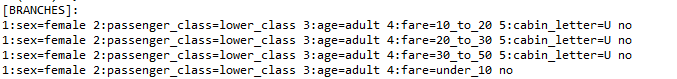
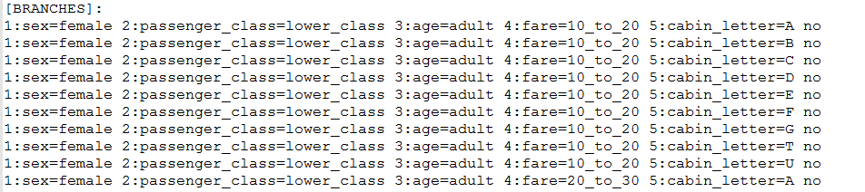
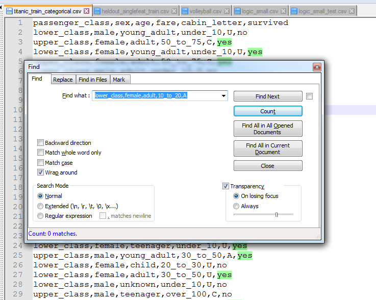
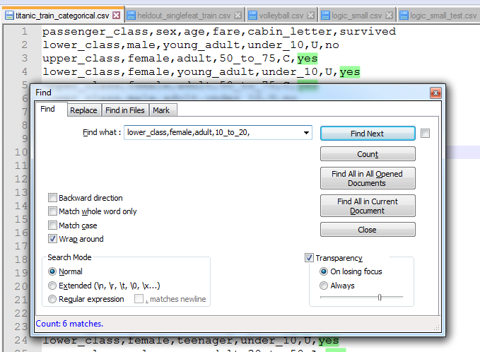
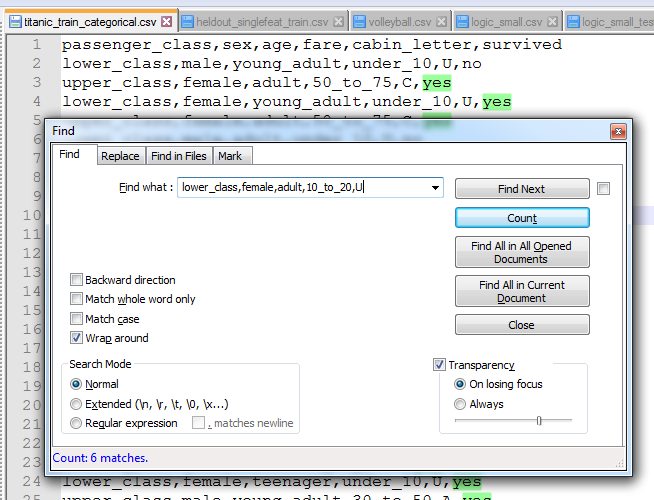

OK nije mi jasno. Program mi radi za sve primjere osim za titanic. Kod ispisa entropija je sve dobro, ali branchevi mi nisu isti kao njima, i onda mi na kraju prediction bude razlicit za tri slucaja. Recimo kod prvog brancha di je fare 10_to_20, kad algoritam dode do cabin_letter, meni za cabin_letter ostane samo U

dok bi po njima trebala bit sva slova

i iso sam korak po korak kolko sam mogo, jer ipak je to 700 linija dataseta, i nisam bas naso neke nepravilnosti. Onda sam iso gledat u train dataset, u u tom datasetu nema ni jedna linija koja bi se podudarala sa lower_class,female,adult,10_to_20,A

nego sve linije koje se podudaraju sa
lower_class,female,adult,10_to_20, za cabin_letter imaju samo U, sto moj programi i kaze


To znaci da algoritam nikako nebi za lower_class,female,adult,10_to_20 kao cabin_letter trebo imat A. Sad il sam ja nesto krivo shvatio sa algoritmom, sto mi opet nema smisla jer mi nije jasno kako mi je za sve ostale primjere dobro, il nesto kod njih ne drzi vodu il sam zbilja napokon prosviko, tak da ako neko zna do cega je bio bi zahvalan.